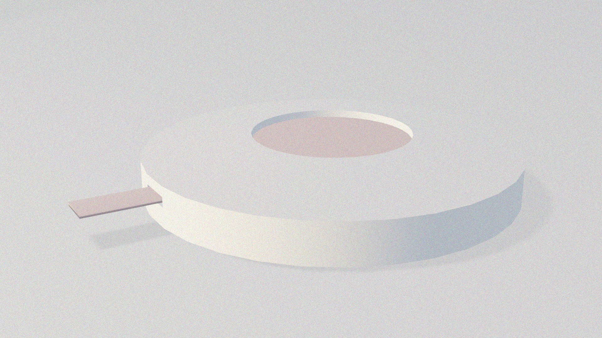

Archeology of The Futures
01 Background
The world is moving faster than ever.
The essence of new technologies and new changes is to eliminate low efficiency with high efficiency.
Most people think that the innovation of the times is to increase productivity,
but in fact, the rise of the new era will once again eliminate the groups that have not mastered new technologies.
Through the promotion of capitalism, it is true that our society is more progressive.
However, with fierce competitiveness, the decadent production relations directly lead to the increasing life pressure of young people.
02 Two Axis Matrix
03 Draft (updated for the second week)
Punched-Card Machine for Pressure
I want to do a punched-card machine for pressure.
On the one hand, it simulates the condition that young people punch in and out for work daily.
They cannot change their situations while suffering extreme pressure,
leading to terrible physical and mental disorders.
How does it work?
Put the finger in the middle of the punched-card machine,
which will start to sensor the user’s pulse to speculate the pressure level.
And then, the color paper will be printed, which the user could paste on the calendar to see the changes through a month.
( “Red” paper means the user suffered from severe stress and should be aware of their mental conditions.
As for “Blue,” it means the light pressure.)
04 Final Results (updated for the second week)
